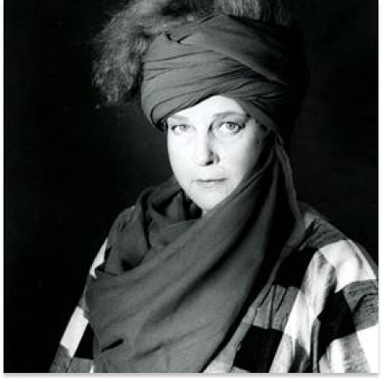
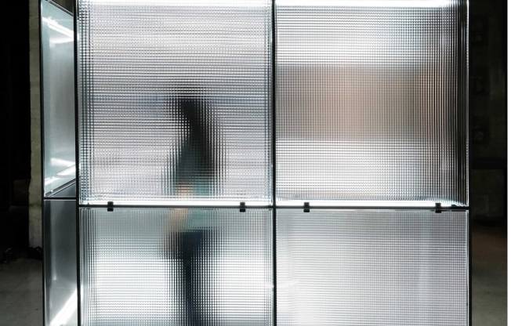
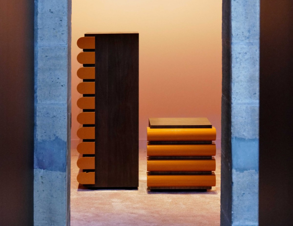

Nanda Vigo est une travailleuse acharnée qui a su se renouveler sans cesse tout en restant fidèle à sa recherche conceptuelle.
Elle a produit une œuvre considérable et a toujours lutté contre la catégorisation de son identité en tant que femme , artiste, designer et architecte.
Elle a déclaré qu'au cours de sa carrière, elle a dû travailler plus dur que certains de ses collaborateurs et amis afin de s'imposer et obtenir le succès qu'elle méritait dans l' univers majoritairement masculin des avant-gardes.
Le verre, l’aluminium, le miroir ou encore les néons, matériaux caractéristiques de son travail, se feront écho pour solliciter nos sens et donner une matérialité à la réflexion philosophique de Nanda Vigo.
Afin de transmettre la valeur contemporaine, novatrice et totale de l’œuvre de Nanda Vigo, plusieurs environnements et installations historiques, aujourd’hui démolis pour la plupart, seront reconstitués.

Seront ainsi présentés ses objets iconiques comme les Cronotopo (qui signifie « espace-temps ») conceptualisés comme un domaine de recherche expérimentale capable d'élargir les effets d'éclairage et les perceptions de la forme à travers le verre et le néon. Dès 1959, Nanda Vigo dépasse le cadre et sort de l’œuvre pour toucher le spectateur : l’image devient un environnement dans lequel vivre, agir et réagir.
